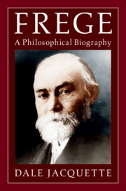

Jacquette’s Frege

Oscar Murillo’s terrific new exhibition in Cambridge is called “Violent Amnesia”. And I too have obviously been afflicted by a bad temporary bout of amnesia!
It suddenly all came back to me. In 2007, Dale Jacquette published a new translation of Frege’s The Foundations of Arithmetics. And I now recall that it got some of the worst reviews I have ever seen. I’ve checked again. Michael Kremer (at NDPR) initially gently and then with increasing force excoriates the translation as full of sentences and passages that make no sense, and riddled with inaccuracies and egregious errors. And he finds Jacquette’s editorial introduction equally full of quite basic misunderstandings of Frege. Kremer gives damning chapter and verse, more than enough to fully justify his resoundingly negative judgements in the long review. Matthias Schirn in his lengthy review (HPL 2010) is equally negative. He finds, and he is being kind, that Jacquette’s introduction is “fraught with misrepresentations” and his translation “offends over and over against [Jacquette’s] own guiding principle of literal accuracy”: again, there is more damning chapter and verse. Kremer and Schirn’s complaints aren’t at the level of disputable and over-heated rival judgements over the reading of difficult texts: not to put too fine a point on it, they are assertions of the author’s incompetence at a pretty basic level.
Obviously that wasn’t enough to put Jacquette off his efforts at writing about Frege. But it should have been. CUP has just published his Frege: A Philosophical Biography. I’ve now read the first hundred pages or so, tracing Frege’s life up to the point where he writes the Begriffsschrift. This book strikes me, not to put too fine a point on it, as again pretty dreadful.
Let’s set aside the fact that the prose is laboured, repetitive and very longwinded, so the book is twice the length it could ever have needed to be. We don’t need eight almost entirely irrelevant pages on the history of Wismar, Frege’s birthplace. And we most certainly don’t need crass passages like this, prompted by a somewhat conventional family photograph: “From the photographic evidence, it is tempting to imagine dour nights of dutiful romance between Auguste and Karl Alexander in heavy linen night garments. By grudging or joyous fulfilment of an obligation before God they produced first Gottlob and then Arnold.”
But leaden prose apart, what disqualifies Jacquette from seriously engaging with his task of writing about Frege’s early career as a mathematician is his hopeless level of understanding of mathematics. Consider this gem, for example** Most proofs, even in classical times, beginning with Euclid’s famous argument that there is no greatest prime number … are instances of indirect reasoning or reductio ad absurdum.
Most proofs! Ye gods. Or how about this:** Mathematics is hard work. The ideas are usually not difficult, once the relations a mathematical theory is trying to formalize and how the symbol transformation rules are supposed to work have been understood. The rest is all complicated and sometimes ingenious manipulation of signs in your head or on paper.
Oh yes. Working with algebraic topology or dynamical systems theory is just like that. And so it goes.
It takes Jacquette over a hundred pages to get Frege to the point of writing the Begriffsschrift. What we want to know, by way of an account of Frege’s intellectual formation, is about his training and early work as a mathematician. We get nothing of worth. We have a list of courses taken by Frege — but no real sense of what was in them (though you might like to wonder just what level of confusion it requires to speculate that taking a course on telegraphy, and noting the binary code of the telegraph key, might have inclined Frege to “treat every sentence expressing a proposition as exclusively true or false”.) We surely want to know e.g. what the content of a course on analysis might have been (but oh, did you know that “Mathematical analysis is dedicated(!) to the problem of trying to determine the exact area beneath a given curve in two-dimensional space, as well as coping computationally with phenomena that can be geometrically pictures as involving continuously changing values”?).
Jacquette obviously hasn’t a clue what is going on in Frege’s dissertation – he doesn’t pick up at all that it is about complex projective geometry (I suspect he thinks it is about the ordinary Argand plane of elementary maths). And he hasn’t a clue either about what is going on in the supposedly “formidable” Habilitionsschrift, about functional iteration and the finding of solutions to some functional equations. Jacquette goes in for some obfuscating armwaving, but really the reader is left quite in the dark about Frege’s real mathematical world as we reach the epochal 1879. As far as serious intellectual biography is concerned, this is a pretty much a waste of print and of the reader’s time.
I think I’m going to be kind to myself and give the remaining five hundred or more pages a miss.
I frankly admitted to having read only a hundred pages or so before giving up on the book. Was I being unfair, then? Did I miss much by not reading on? Or did the book continue in the same hopelessly amateurish and confused way?
It seems the latter. Here’s a review by Wolfgang Kienzler (a shorter version appeared in History and Philosophy of Logic in January this year). Kienzler was evidently no more impressed than I was.
A nice example of Gricean implicature, from this review: “The author seems to enjoy using as many German words and expressions as possible across his text, and it must be admitted that almost all of them are spelled correctly.” Ouch.